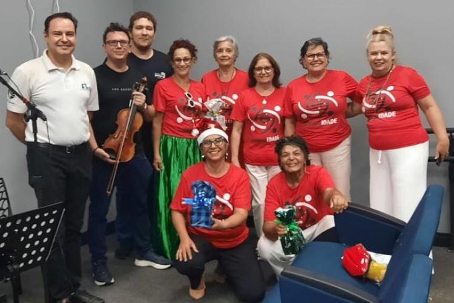
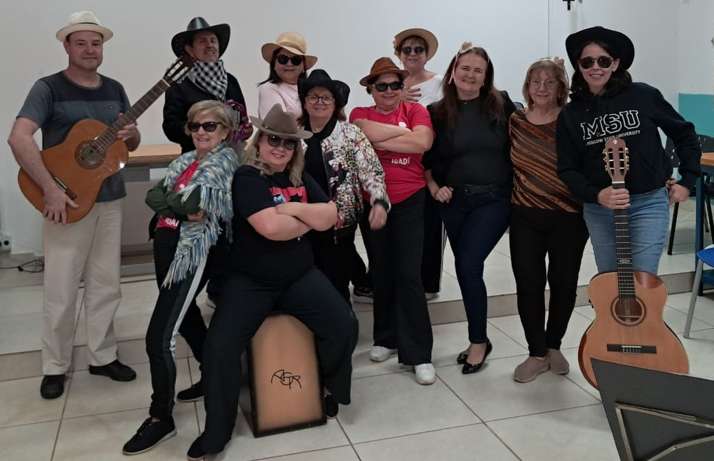
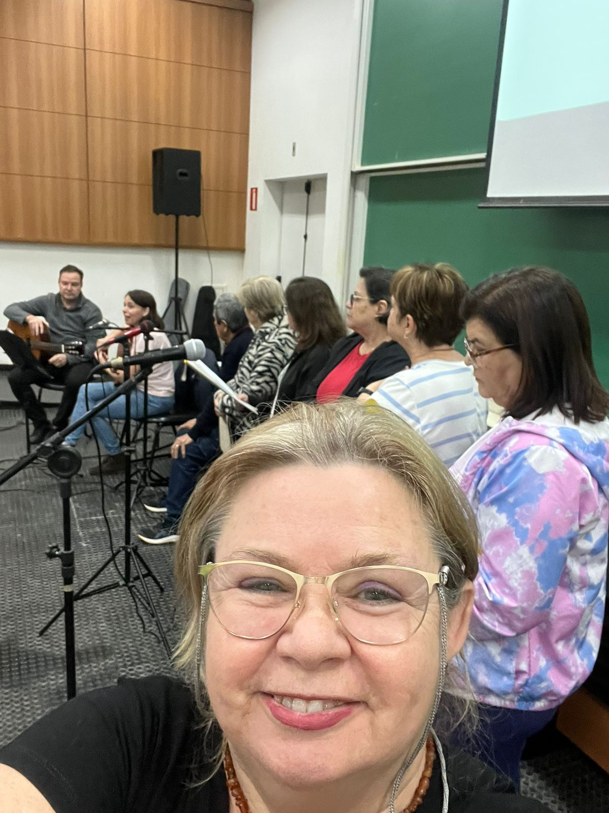
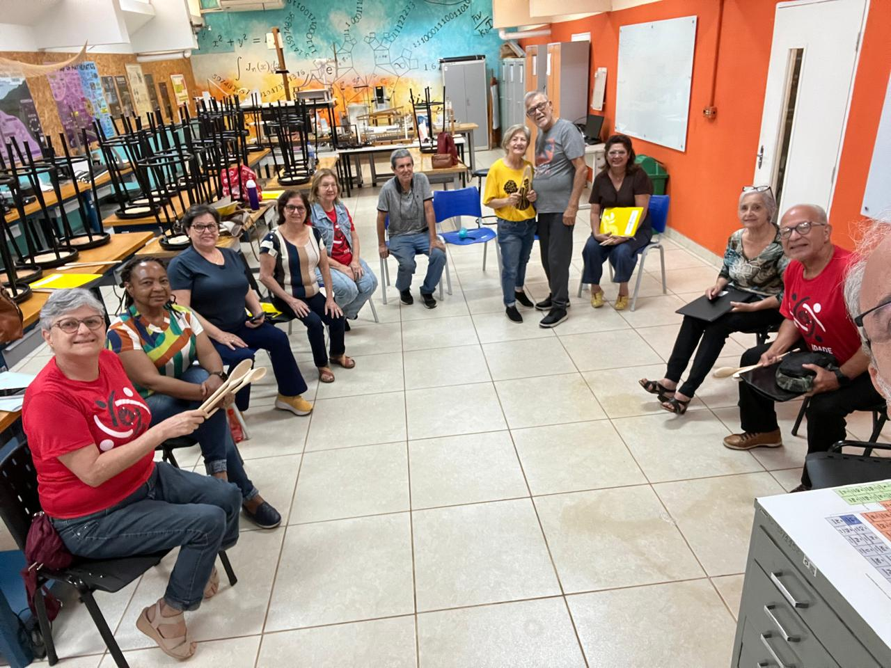
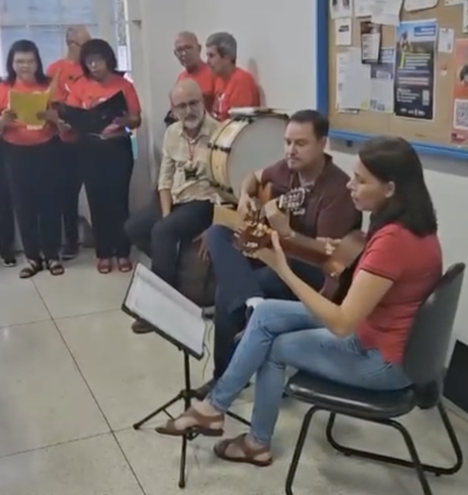
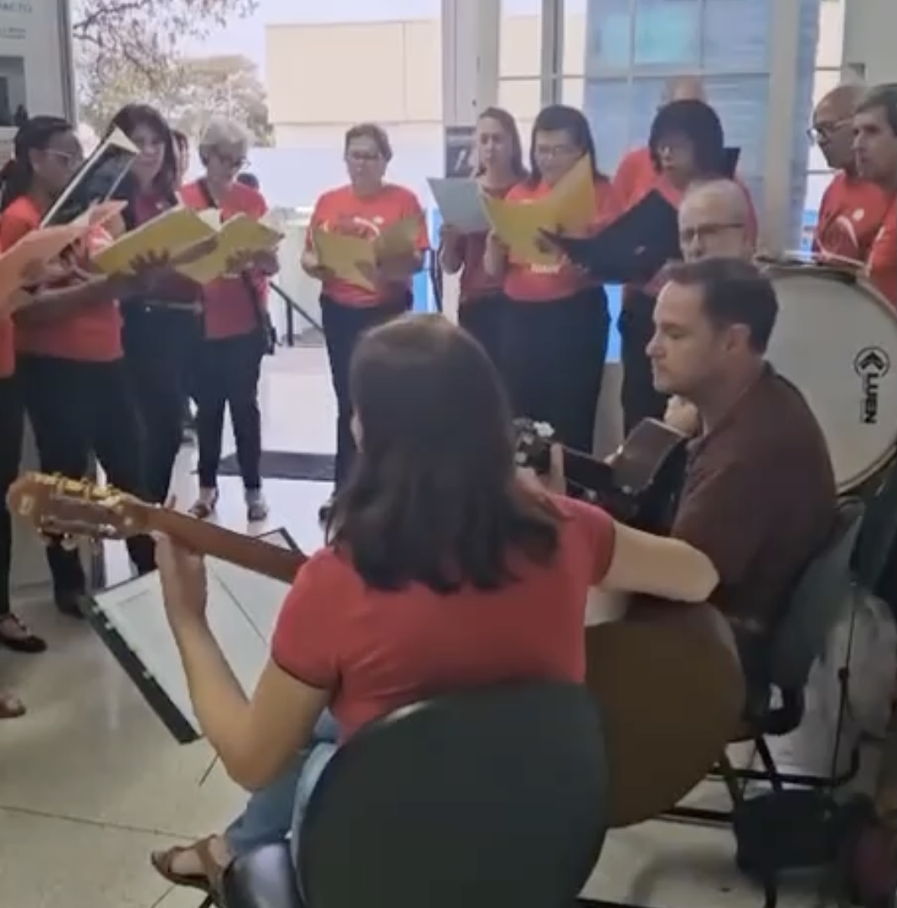
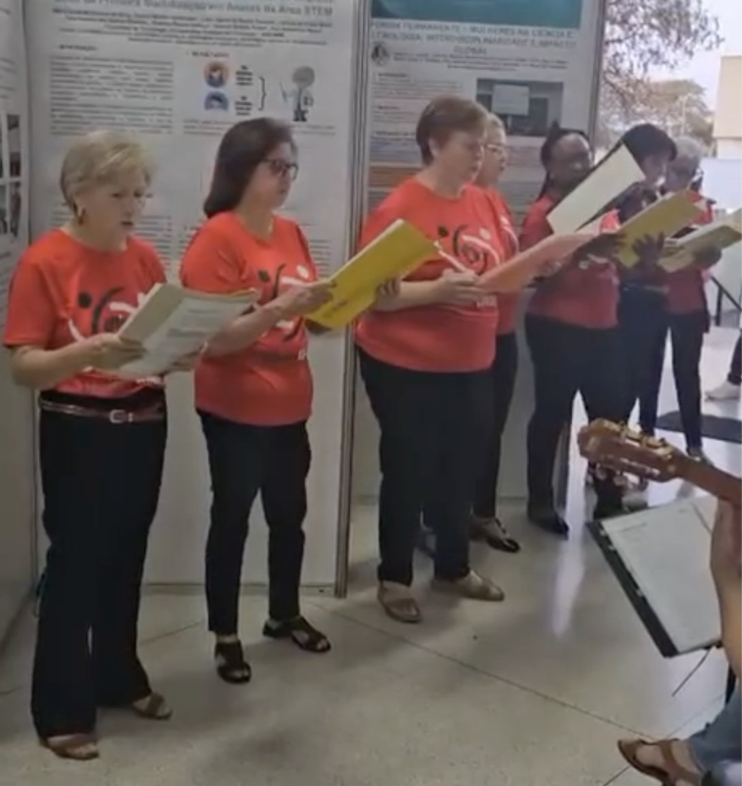
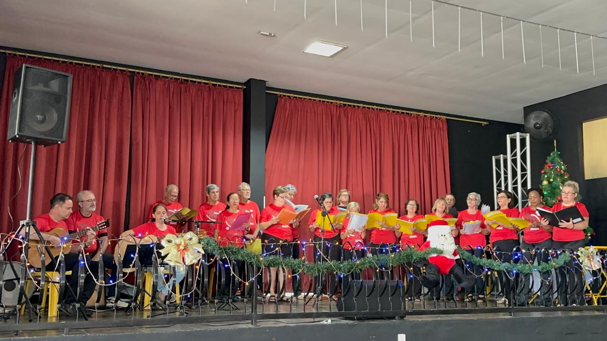
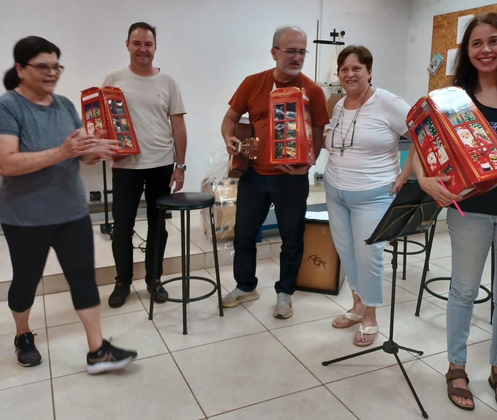
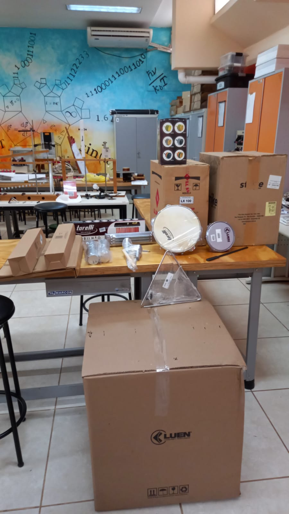

Projeto voltado para alunos com 50+ dentro do Programa UniversIDADE da UNICAMP com o objetivo de trabalhar diversos aspectos da música, estimulando a realização musical coletiva e a interação social dos participantes. O projeto também visa auxiliar na prevenção do declínio cognitivo resultante do envelhecimento e na redução de sintomas de depressão e de ansiedade.
2S/2024
A primeira oficina foi realizada durante o 2S/2024. Foram 15 encontros com aulas sobre o violino, sobre o piano e sobre a ópera Turandot. Além das aulas, foram trabalhadas algumas músicas e realizados ensaios de músicas de diferentes estilos musicais. Esse primeiro oferecimento teve como instrutores o Prof. Yuri Meyer da FT ao violino e o mestrando Luis Felipe Nicoletto de Souza ao piano.

Os ensaios permitiram que fosse feita uma apresentação musical durante o encerramento do Programa UniversIDADE de 2024. A apresentação pode ser conferida a seguir.
1S/2025
A segunda oficina foi realizada durante o 1S/2025. Nos encontros foram trabalhadas músicas dos estilos de choro/seresta, forró, sertanejo raiz e rock. Participaram como instrutores o Prof. Marco Antonio Garcia de Carvalho na voz e percussão, a Profa. Juliana Bueno na voz e violão.

Realizamos uma apresentação no dia 7/Jul/2025 na Faculdade de Tecnolgia, durante o encerramento das atividades do semestre do Programa UniversIDADE.

Na apresentação, foram cantadas as músicas Prelúdio de Raul Seixas, Asa branca e Xote das meninas de Luiz Gonzaga, Tristeza do Jeca de Angelino de Oliveira, Saudade da minha terra de Gerson Coutinho da Silva e Pascoal Todarello, Lua Branca de Chiquinha Gonzaga, Carinhoso de Pixinguinha e É preciso saber viver de Roberto Carlos e Erasmo Carlos. Entre as músicas, apresentamos informações sobre as músicas e sobre os períodos modernista e pré-modernista, que tanto influenciaram os estilos das músicas apresentadas.
2S/2025
A terceira oficina foi realizada durante o 2S/2025. Nos encontros foram trabalhadas músicas dos estilos de sertanejo raiz, forró, e rock. Participaram como instrutores o Prof. Marco Antonio Garcia de Carvalho na voz e percussão, a Profa. Juliana Bueno na voz e violão.

Realizamos uma apresentação no dia 16/outubro/2025 durante a I Mostra de Extensão da FT, onde também foi apresentado um poster do projeto.




Realizamos também uma apresentação no dia 11/Dezembro/2025 na ATAPIL em Limeira, durante o encerramento das atividades do semestre do Programa UniversIDADE.
Na apresentação, foram cantadas as músicas É preciso saber viver de Roberto Carlos e Erasmo Carlos, Asa branca, Xote das meninas e Luar do sertão de Luiz Gonzaga, Tocando em frente de Almir Sater, Rindo à toa do Falamansa e Natal todo dia do conjunto Roupa Nova.

Neste oferecimento, os instrutores receberam do grupo um lindo presente de Natal!

No segundo semestre de 2025 fomos contemplados com recursos da Pró-reitoria de Extensão da Unicamp que foram usados para adquirir instumentos musicais de percussão, caixa amplificadora e estandes para partitura. Esses instrumentos serão usados nos encontros de 2026.
